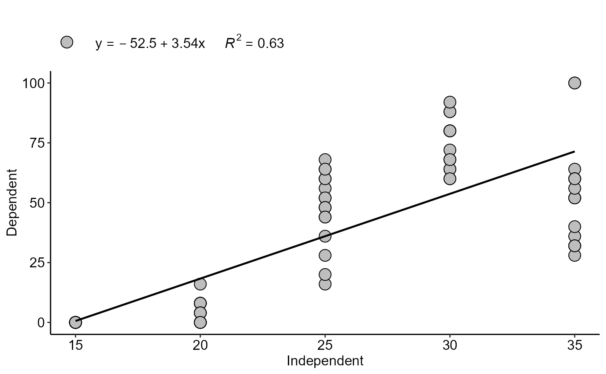

Analysis: Regression linear or nonlinear
regression.RdThis function is a simplification of all the analysis functions present in the package.
regression(
trat,
resp,
model = "LM1",
ylab = "Dependent",
xlab = "Independent",
theme = theme_classic(),
legend.position = "top",
point = "all",
textsize = 12,
pointsize = 4.5,
linesize = 0.8,
pointshape = 21,
round = NA,
fontfamily = "sans",
error = "SE",
width.bar = NA
)Arguments
- trat
Numeric vector with dependent variable.
- resp
Numeric vector with independent variable.
- model
model regression (default is LM1)
- ylab
Variable response name (Accepts the expression() function)
- xlab
treatments name (Accepts the expression() function)
- theme
ggplot2 theme (default is theme_classic())
- legend.position
legend position (default is c(0.3,0.8))
- point
defines whether you want to plot all points ("all") or only the mean ("mean")
- textsize
Font size
- pointsize
shape size
- linesize
line size
- pointshape
format point (default is 21)
- round
round equation
- fontfamily
Font family
- error
Error bar (It can be SE - default, SD or FALSE)
- width.bar
Bar width
Value
The function returns a list containing the coefficients and their respective values of p; statistical parameters such as AIC, BIC, pseudo-R2, RMSE (root mean square error); largest and smallest estimated value and the graph using ggplot2 with the equation automatically.
Details
To change the regression model, change the "model" argument to:
N: Graph for not significant trend.
loess0: Loess non-parametric degree 0
loess1: Loess non-parametric degree 1
loess2: Loess non-parametric degree 2
LM0.5: Quadratic inverse
LM1: Linear regression.
LM2: Quadratic
LM3: Cubic
LM4: Quartic
LM0.5_i: Quadratic inverse without intercept.
LM1_i: Linear without intercept.
LM2_i: Quadratic regression without intercept.
LM3_i: Cubic without intercept.
LM4_i: Quartic without intercept.
LM13: Cubic without beta2
LM13i: Cubic inverse without beta2
LM23: Cubic without beta1
LM23i: Cubic inverse without beta2
LM2i3: Cubic without beta1, with inverse beta3
valcam: Valcam
L3: Three-parameter logistics.
L4: Four-parameter logistics.
L5: Five-parameter logistics.
LL3: Three-parameter log-logistics.
LL4: Four-parameter log-logistics.
LL5: Five-parameter log-logistics.
BC4: Brain-Cousens with four parameter.
BC5: Brain-Cousens with five parameter.
CD4: Cedergreen-Ritz-Streibig with four parameter.
CD5: Cedergreen-Ritz-Streibig with five parameter.
weibull3: Weibull with three parameter.
weibull4: Weibull with four parameter.
GP2: Gompertz with two parameter.
GP3: Gompertz with three parameter.
GP4: Gompertz with four parameter.
VB: Von Bertalanffy
lo3: Lorentz with three parameter
lo4: Lorentz with four parameter
beta: Beta
gaussian3: Analogous to the Gaussian model/Bragg with three parameters.
gaussian4: Analogous to the Gaussian model/Bragg with four parameters.
linear.linear: Linear-linear
linear.plateau: Linear-plateau
quadratic.plateau: Quadratic-plateau
plateau.linear: Plateau-linear
plateau.quadratic: Plateau-Quadratic
log: Logarithmic
log2: Logarithmic quadratic
thompson: Thompson
asymptotic: Exponential
asymptotic_neg: Exponential negative
asymptotic_i: Exponential without intercept.
asymptotic_ineg: Exponential negative without intercept.
biexponential: Biexponential
mitscherlich: Mitscherlich
yieldloss: Yield-loss
hill: Hill
MM2: Michaelis-Menten with two parameter.
MM3: Michaelis-Menten with three parameter.
SH: Steinhart-Hart
page: Page
newton: Newton
potential: Potential
midilli: Midilli
midillim: Modified Midilli
AM: Avhad and Marchetti
peleg: Peleg
VG: Vega-Galvez
Examples
library(AgroReg)
data("aristolochia")
attach(aristolochia)
#> The following objects are masked from aristolochia (pos = 5):
#>
#> resp, trat
#> The following objects are masked from aristolochia (pos = 10):
#>
#> resp, trat
#> The following objects are masked from aristolochia (pos = 11):
#>
#> resp, trat
#> The following objects are masked from aristolochia (pos = 17):
#>
#> resp, trat
#> The following objects are masked from aristolochia (pos = 18):
#>
#> resp, trat
#> The following objects are masked from aristolochia (pos = 19):
#>
#> resp, trat
#> The following objects are masked from aristolochia (pos = 25):
#>
#> resp, trat
#> The following objects are masked from aristolochia (pos = 26):
#>
#> resp, trat
#> The following objects are masked from aristolochia (pos = 31):
#>
#> resp, trat
#> The following objects are masked from aristolochia (pos = 32):
#>
#> resp, trat
#> The following objects are masked from aristolochia (pos = 33):
#>
#> resp, trat
#> The following objects are masked from aristolochia (pos = 35):
#>
#> resp, trat
#> The following objects are masked from aristolochia (pos = 36):
#>
#> resp, trat
#> The following objects are masked from aristolochia (pos = 38):
#>
#> resp, trat
regression(trat, resp)
#>
#> $Coefficients
#> Estimate Std. Error t value Pr(>|t|)
#> (Intercept) -52.50 8.0436071 -6.526922 6.166973e-09
#> trat 3.54 0.3095986 11.434161 2.398736e-18
#>
#> $values
#> Parameter values
#> 1 X Maximum 35.00000
#> 2 Y Maximum 71.40000
#> 3 X Minimum 15.00000
#> 4 Y Minimum 0.60000
#> 5 AIC 706.93212
#> 6 BIC 714.07820
#> 7 r-squared 0.63000
#> 8 RMSE 19.33443
#>
#> $VIF
#> [1] NA
#>
#> [[4]]

#>
#> $Coefficients
#> Estimate Std. Error t value Pr(>|t|)
#> (Intercept) -52.50 8.0436071 -6.526922 6.166973e-09
#> trat 3.54 0.3095986 11.434161 2.398736e-18
#>
#> $values
#> Parameter values
#> 1 X Maximum 35.00000
#> 2 Y Maximum 71.40000
#> 3 X Minimum 15.00000
#> 4 Y Minimum 0.60000
#> 5 AIC 706.93212
#> 6 BIC 714.07820
#> 7 r-squared 0.63000
#> 8 RMSE 19.33443
#>
#> $VIF
#> [1] NA
#>
#> [[4]]
 #>
#>